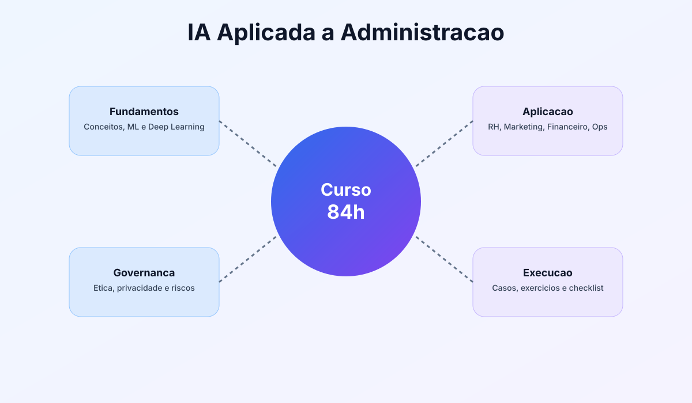
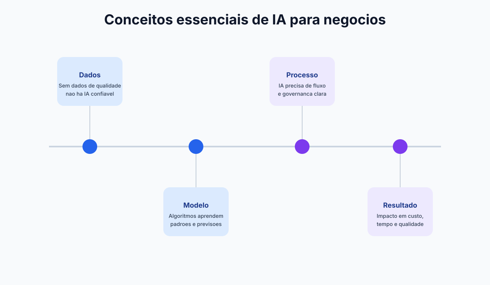

Linguagem comum
Alinhe conceitos antes de executar.
Introdução
Antes de automatizar processos ou criar relatórios inteligentes, é essencial dominar os fundamentos. Nesta introdução, você vai entender o que é IA, como ela evoluiu e por que a administração moderna depende cada vez mais de decisões assistidas por dados.

Alinhe conceitos antes de executar.
Mapeie dores e oportunidades em 15 min.
Ferramenta antes do processo definido.
IA é a capacidade de sistemas computacionais executarem tarefas que normalmente exigiriam inteligência humana, como reconhecer padrões, prever cenários, classificar informações e gerar conteúdo.
Empresas usam IA para reduzir custos operacionais, melhorar experiência do cliente e identificar oportunidades de crescimento com menos achismo.
Sistema didático da introdução
Resumo
Antes de escolher ferramenta, alinhe vocabulário, objetivo de negócio e critério de sucesso da iniciativa.
Exemplo real
Equipes que padronizam conceitos de IA, ML e dado útil reduzem retrabalho de decisão e aceleram pilotos.
Prompt pronto
Use o prompt de oportunidades para transformar dores administrativas em backlog priorizado de casos de uso.
Atenção
Começar por ferramenta sem processo definido cria automação superficial e baixa confiança da liderança.
1950-1980: IA simbólica
Primeiros sistemas baseados em regras lógicas. Eram úteis para problemas fechados, mas pouco adaptáveis ao mundo real.
1990-2010: Machine Learning
Modelos passam a aprender com dados. Algoritmos de classificação, regressão e recomendação entram no mercado corporativo.
2012-2020: Deep Learning
Com mais dados e poder computacional, redes neurais impulsionam visão computacional, voz e linguagem natural.
2021 em diante: IA generativa
Modelos multimodais produzem texto, imagens, código e análises. A adoção corporativa acelera em áreas administrativas.
Prompt pronto para diagnóstico de oportunidades
Atue como consultor de eficiência operacional. Com base no contexto abaixo, identifique 5 oportunidades de aplicação de IA em processos administrativos. Para cada oportunidade, informe: objetivo, ferramenta recomendada, risco principal, indicador de sucesso e ganho estimado em horas/mês. Contexto da empresa: [descreva setor, tamanho da equipe, principais processos e dores atuais]
| Setor | Aplicação de IA | Benefício operacional | Métrica típica |
|---|---|---|---|
| Varejo | Previsão de demanda e reposição automática | Redução de ruptura e excesso de estoque | Queda de 12% a 25% em perdas |
| Serviços | Classificação automática de chamados | Atendimento mais rápido e padronizado | Redução de até 35% no tempo de resposta |
| Indústria | Manutenção preditiva com sensores | Menos paradas não planejadas | Aumento de 8% a 15% na disponibilidade |
| Financeiro | Detecção de anomalias em transações | Mitigação de fraude e erro contábil | Melhora de 20% a 40% na acurácia de alertas |
Para usar IA com qualidade na administração, é necessário entender a lógica causal por trás dos resultados. Não basta obter uma resposta rápida: é preciso saber se o dado de origem é confiável, se a pergunta está bem formulada e se existe um critério de validação de saída.
Em termos práticos, toda solução de IA em negócios passa por quatro pilares: dado, modelo, processo e resultado. Quando um desses pilares falha, a percepção de ganho desaparece e o risco operacional cresce.

O modelo aprende o padrão existente na base. Se o dado estiver incompleto, desatualizado ou enviesado, a decisão automatizada também ficará comprometida.
Classificação, previsão, sumarização e geração são tarefas diferentes. Escolher o tipo de modelo correto evita desperdício de esforço e expectativas irreais.
Sem um responsável pelo fluxo, as saídas de IA viram recomendações soltas. Defina claramente quem decide, quem revisa e quem mede resultado.
Produtividade, custo, taxa de erro e SLA são métricas mínimas para provar valor. Sem medição contínua, o projeto perde sustentação executiva.
Glossário essencial para seguir o curso
Feature: variável usada pelo modelo para aprender.
Inferência: momento em que o modelo gera uma resposta para um novo caso.
Drift: degradação de desempenho quando o padrão dos dados muda ao longo do tempo.
Para transformar esta etapa em formação profissional, execute a trilha abaixo antes de avançar para o Módulo 1.
Bloco 1
Estude conceitos centrais de IA, ML e valor estratégico para administração.
Carga: 2h
Bloco 2
Mapeie processos da sua operação e classifique potencial de automação.
Carga: 2h
Bloco 3
Consolide oportunidades, priorize por impacto e defina 1 piloto inicial.
Carga: 2h
Aplicacao pratica para transformar teoria de Introducao em ganho operacional mensuravel.
Mapeie o fluxo atual de mapeamento inicial de oportunidades e identifique gargalos de tempo, custo e retrabalho.
Evidencia: mapa AS-IS com 3 gargalos priorizados.
Desenhe um piloto de 2 semanas para fundamentos e oportunidades de IA, com escopo controlado e checkpoints diarios.
Evidencia: plano de execucao com dono, prazo e criterio de parada.
Defina baseline e metas para oportunidades priorizadas com viabilidade, comparando antes vs depois com o mesmo periodo.
Evidencia: painel simples com 3 KPIs e tendencia semanal.
Implemente regras de revisao humana, classificacao de dados e trilha de auditoria das decisoes.
Evidencia: checklist de risco com responsaveis e frequencia de revisao.
Planeje extensao para um segundo processo mantendo qualidade, custo sob controle e aprendizagem da equipe.
Evidencia: roadmap 30-60-90 dias com marco de escala.
Prompts curados para acelerar analise, decisao e implantacao com foco em Introducao.
Prompt 1: Diagnostico executivo
Atue como consultor de fundamentos e oportunidades de IA. Faça um diagnostico rapido do processo [mapeamento inicial de oportunidades] com 5 gargalos, impacto estimado e prioridade de ataque.
Prompt 2: Plano 30-60-90
Monte um plano 30-60-90 dias para implementar IA em [mapeamento inicial de oportunidades] incluindo objetivos, entregas por fase, donos e riscos.
Prompt 3: KPIs e baseline
Defina um modelo de medicao para [oportunidades priorizadas com viabilidade] com baseline, meta trimestral, formula e frequencia de acompanhamento.
Prompt 4: Governanca minima
Crie uma politica minima de uso de IA para este contexto com regras de dados, revisao humana, aprovacao e auditoria.
Prompt 5: Escala com controle
Proponha como escalar o piloto para outra area sem perder qualidade, informando criterios de readiness e plano de capacitacao.
Use os prompts abaixo para mapear onde a IA pode gerar ganho real na sua operação administrativa.
Prompt: Audit rápido de processos administrativos com janelas de automação
Estou revisando processos administrativos para oportunidades de IA. Para cada item abaixo, indique: a) se é candidato a automação com IA (sim/não/parcial), b) o ganho principal esperado, c) o risco de falha, d) tempo até resultado realista. Processos: 1. [descreva: recebimento de documentos, classificação, armazenamento] 2. [descreva: processamento de despesas, validação, aprovação] 3. [descreva: preparação de relatórios, consolidação de dados] 4. [descreva: classificação de chamados ou demandas] 5. [descreva: validação de dados de entrada em sistemas] Critério: considere viabilidade se existem dados históricos suficientes (mínimo 100 exemplos), regra clara de decisão e impacto acima de 5 horas/pessoa/mês.
Prompt: Priorizar primeiro piloto de IA por impacto e viabilidade
Precisamos escolher 1 processo para piloto de IA nos próximos 30 dias. Avalie os candidatos abaixo com a matriz: impacto financeiro (1-5) x viabilidade técnica (1-5) x velocidade de implementação (1-5). Recomende qual começar primeiro e por quê. Candidatos: - Classificação automática de [tipo de documento]: 20 horas/mês, sem dados estruturados ainda - Extração de dados de [tipo de formato]: 15 horas/mês, dados disponíveis, regra clara - Validação de [tipo de transação]: 30 horas/mês, 500 exemplos históricos, lógica complexa - Priorização de [tipo de tarefa]: 10 horas/mês, regra simples, poucos dados Recomendação: qual é o menor risco com ganho real? E qual deveria ser segundo?
Prompt: Roadmap de 90 dias com áreas prioritárias de transformação
Monte um roadmap de transformação administrativa com IA para 90 dias dividido em: Mês 1 (aprendizado + 1 piloto), Mês 2 (validação + construir case), Mês 3 (escala + governance). Para cada mês, defina: 1. Objetivo principal (o que será diferente ao final?) 2. Ações concretas (quem faz o quê?) 3. Dependências (o que é preciso estar pronto?) 4. Métrica de sucesso (como saberemos que funcionou?) 5. Risco principal a mitigar Contexto: - Experiência atual com IA: [nenhuma/pouca/média/avançada] - Orçamento disponível: [R$ ou ferramentas free/freemium] - Equipe disponível: [X pessoas, quais são os skills] - Áreas prioritárias: [RH, Financeiro, Operações - priorize]